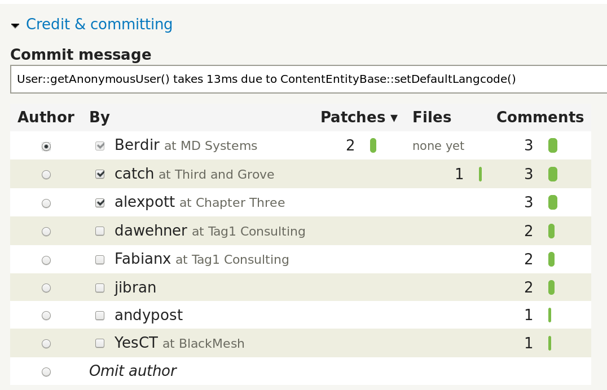

Full projects, audits, bootstrap weeks, consulting, architecture, ...
~20 employees
biggest Drupal contributor
Why do you do that?
Why are not more people doing this?
How do you do that?
Why are we part of free* software?
*as in freedom, Richard M. Stallman style
**there is a prize at the end!
Free as in free beer
Better software
Freedom
Community and people
Learning opportunity
Good career path
Client demanding it
Who invented free software?
Ever heard "Free software song"?
BTW... this was the prize.
Propeitary software
Give me pros and cons
Own* software
Give me pros and cons
*developed in house
Free software
Give me pros and cons
"Free software can be understood as a combination of own and 3rd party propeitary software. It can be one, the other or anywhere in between - depending on your understanding of it."
Janez Urevc, November 2016, Prague
Why?
Co-control the software, control the destiny
Reputation (and everything that comes with it)
Access to best talent
Taking part in decition making
Better career options (for individuals)
...
Plenty of good reasons...
... and yet not many people does it.
* It is time for another game
Top 0.5% makes more than 20% of contributions.
Top 1% makes majority of contributions.
We've done few good things...

... but we need to do more.
It is all about interest
We need to figure out how to make contributing to be in the best interest of our members.
“We are what we repeatedly do. Excellence, therefore, is not an act, but a habit.”